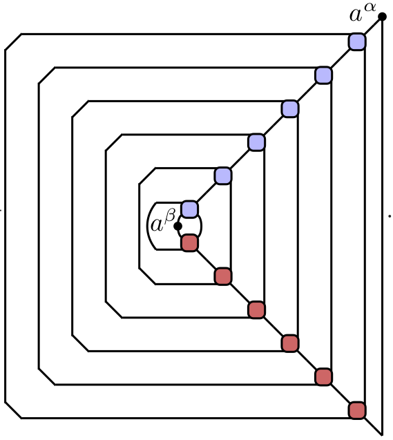
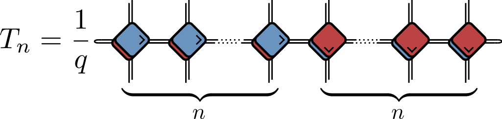

\[ \nonumber \newcommand{\br}{\mathbf{r}} \newcommand{\bR}{\mathbf{R}} \newcommand{\bp}{\mathbf{p}} \newcommand{\bk}{\mathbf{k}} \newcommand{\bq}{\mathbf{q}} \newcommand{\bv}{\mathbf{v}} \newcommand{\bx}{\mathbf{x}} \newcommand{\bz}{\mathbf{z}} \DeclareMathOperator*{\E}{\mathbb{E}} \]
Quantum Circuits of Dual Unitary Gates
Sarang Gopalakrishnan and AL 2019
Pieter Claeys and AL 2020, and arXiv:2009.03791
Slides at austen.uk/slides/dual-unitaries-pcts
Circuits
Gates
Unitarity and dual unitarity

- For qubits dual unitary gate has 14 parameters (c.f. 16 for \(U(4)\)!)
Outline
- Origins of dual unitarity: entanglement
- Correlation functions
- OTOCs
Origins of dual unitarity
Sarang Gopalakrishnan and AL (2019) interpreted earlier results of Bertini, Kos, Prosen PRX (2019) on the kicked Ising model in terms of dual unitarity
Simultaneously, Bertini, Kos, Prosen PRL (2019) showed how to compute correlations for general dual unitarities
Kicked Ising Model
- Time dependent Hamiltonian with kicks at \(t=0,1,2,\ldots\).
$$ \begin{aligned} H_{\text{KIM}}(t) = H_\text{I}[\mathbf{h}] + \sum_{m}\delta(t-n)H_\text{K}\\ H_\text{I}[\mathbf{h}]=\sum_{j=1}^L\left[J Z_j Z_{j+1} + h_j Z_j\right],\qquad H_\text{K} &= b\sum_{j=1}^L X_j, \end{aligned} $$
- “Stroboscopic” form of \(U(t)=\mathcal{T}\exp\left[-i\int^t H_{\text{KIM}}(t') dt'\right]\)
$$ \begin{aligned} U(n_+) = \left[U(1_+)\right]^n,\qquad U(1_-) = K I_\mathbf{h}\\ I_\mathbf{h} = e^{-iH_\text{I}[\mathbf{h}]}, \qquad K &= e^{-iH_\text{K}}, \end{aligned} $$
Entanglement Growth for Self-Dual KIM
\[ \lim_{L\to\infty} S^{(n)}_A(t) =\min(2t-2,N)\log 2, \]
- Any \(h_j\); initial \(Z_j\) product state

Entanglement Spectrum
- Rényi entropies depend on eigenvalues of reduced density matrix
$$ S^{(n)}_A = \frac{1}{1-n}\log \text{tr}\left[\rho^n\right]=\frac{1}{1-n}\sum_\alpha \lambda_\alpha^n $$
- For SDKIM have \(2^{\min(2t-2,N)}\) non-zero eigenvalues all equal
\[ \lambda_\alpha = \left(\frac{1}{2}\right)^{\min(2t-2,N)} \]
KIM as a circuit

$$ \begin{aligned} \mathcal{K} &= \exp\left[-i b X\right]\\ \mathcal{I} &= \exp\left[-iJ Z_1 Z_2 -i \left(h_1 Z_1 + h_2 Z_2\right)/2\right]. \end{aligned} $$
Properties of KIM gate
When \(|J|=|b|=\pi/4\) KIM gate is dual unitary
This allows for simple proof of entanglement dynamics!
Gopalakrishnan and Lamacraft (2019)
Graphical representation of density matrix
- \(\rho(t) = U\rho_0 U^\dagger\), working from middle out
Folded picture
- Reduced density matrix: trace over all but \(N\) sites (here \(N=6\))

Using unitarity…
Go further with dual unitarity?

Initial conditions
- For SDKIM we have in addition

- Just the thing for \(\rho_0 = \otimes_j |Z_j\rangle\langle Z_j|\)!
…Using dual unitary gates
- A unitary applied to
\[ \overbrace{\frac{\mathbb{1}}{2}\otimes \frac{\mathbb{1}}{2} \cdots }^{t-1} \otimes\overbrace{|Z_1\rangle\langle Z_1|\otimes |Z_2\rangle\langle Z_2| \cdots }^{N-2t+2 } \otimes \overbrace{\frac{\mathbb{1}}{2}\otimes \frac{\mathbb{1}}{2} \cdots }^{t-1} \]
Result for RDM
- Spectrum of RDM same as spectrum of
\[ \overbrace{\frac{\mathbb{1}}{2}\otimes \frac{\mathbb{1}}{2} \cdots }^{t-1} \otimes\overbrace{|Z_1\rangle\langle Z_1|\otimes |Z_2\rangle\langle Z_2| \cdots }^{N-2t-2 } \otimes \overbrace{\frac{\mathbb{1}}{2}\otimes \frac{\mathbb{1}}{2} \cdots }^{t-1} \]
- \(2^{\min(2t-2,N)}\) non-zero eigenvalues all equal to \(\left(\frac{1}{2}\right)^{\min(2t-2,N)}\)
More general initial conditions
Piroli, et al., (2020) considered 2-site MPS initial conditions that allow for solution in similar way
For $2t>N $ result is the same: \(\infty\)-temperature RDM
At earlier times structure of initial state important
Correlation functions (\(T=\infty\))
$$ c(x,y,t)=\mathop{\text{tr}}\left[U(t)^\dagger O(x)U(t) O(y)\right] $$

Using unitarity

“Folded” picture

- Later operator must be in “future light cone” of earlier
On the light cone

Light cone quantum channel

$$ \begin{align} c_\nu^{\alpha\beta}(\nu t,t) = \frac{1}{q} {\rm tr}\left[\mathcal M_{\nu}^{2t}(a^\beta)a^\alpha\right]\\ \mathcal M_{+}(a) = \frac{1}{q} {\rm tr}_1\left[U^\dagger (a\otimes\mathbb{1}) U\right] \end{align} $$
- Unitarity means map is CPTP and unital (identity fixed)
- See Bertini, Kos, Prosen (2019) for dual unitary case, but construction is general
‘Typical’ correlations

- Generic: decay governed by dominant eigenvalue of channel
- Can evaluate correlations inside light cone, just need a bigger channel (see later)!
Dual unitary case
- Unitarity implies future and past lightcones up and down
- Dual unitarity implies future and past left and right
- Conclusion: correlations only on light cone
OTOCs
\[ C_{\alpha \beta}(x,t) = \langle \sigma_{\alpha}(0,t) \sigma_{\beta}(x,0) \sigma_{\alpha}(0,t) \sigma_{\beta}(x,0) \rangle. \] - \(C_{\alpha \beta}(|x|>t,t)=1\) since \(\left[\sigma_{\alpha}(0,t),\sigma_{\beta}(x,0)\right]=0\) for \(|x|>t\)
For smaller \(|x|\) OTOC deviates from 1.
Limiting value of \(|x|/t\) where this occurs defines butterfly velocity
Example: random unitary circuits with local dimension \(q\) have \[ v_\text{B} = \frac{q^2-1}{q^2+1} \] \(v_\text{B}\to 1\) as \(q\to\infty\)
Maximum velocity quantum circuits
- Which circuits have the largest butterfly velocity \(v_\text{B}=1\)?
- Natural guess: dual-unitary circuits!
OTOC for SDKIM

(and no broadening)
Derivation
Fold it up…
- Light cone coordinates \(n_+ = (t+ x)/2\), \(n_- = (t- x+2)/2\)
$$ \begin{align} C^{+}_{\alpha \beta }(x,t) = \left(L(\sigma_{\alpha})\right|\left(T_{n_-}\right)^{n_+}\left|R^{-}(\sigma_{\beta})\right), \nonumber\\ \end{align} $$
- This is for \(x-t\) even, similar expression for \(x-t\) odd
Transfer matrix

Using only unitarity
- Find eigenstate of transfer matrix with eigenvalue one
- Show that \(\lim_{m\to \infty} \left(L_n(\sigma_{\alpha})\right|\left(T_n\right)^m\left|R^{\pm}(\sigma_{\beta})\right) = 1\)
This is the value outside light cone, so \(v_\text{B}<1\) generically
\(v_\text{B}=1\) requires additional eigenstates with eigenvalue one
Using dual unitarity…
- Find \(n+1\) eigenvectors with eigenvalue 1
- For even \(n\),
$C^{+}_{\alpha \beta}(x,t)$vanishes inside light cone$$ \begin{align} \lim_{(x+t) \to \infty }C^{+}_{\alpha \beta}(x,t) = \begin{cases} -\frac{1}{q^2-1} \qquad &\text{if} \quad x=t,\\ 0 \qquad &\text{if} \quad x \neq t. \end{cases} \end{align} $$

For odd \(n\),
$C^{-}_{\alpha \beta}(x,t)$can be found in terms of channel$\mathcal M_{\pm}(\cdot)$describing light cone correlatorRange of behaviour moving inside light cone

Further special cases…
Integrable SDKIM: Exponentially many eigenvectors with eigenvalue one. OTOC immediately saturates to constant value inside light cone.
Are all maximal velocity circuits dual unitary? No! Found a kicked XY model with \(v_\text{B}=1\)
Conclusion
Dual unitary circuits are a big solvable family with a diverse phenomenology that includes integrable and chaotic behaviour…
… but maybe not that diverse for such a big family! \(v_\text{B}=1\) always, for example
Still more to do: effect of measurements, coding, computational complexity…